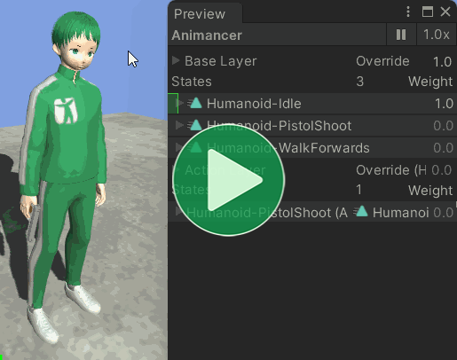
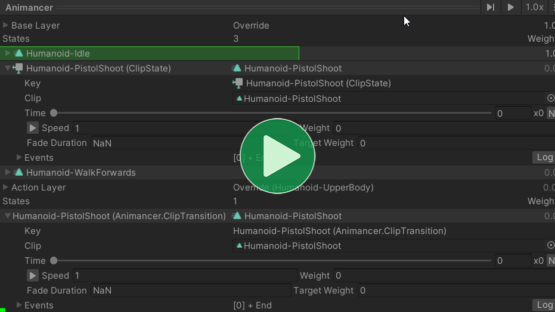

Location: Samples/04 Layers/02 Dynamic Layers
Recommended After: Basic Layers
Learning Outcomes: in this sample you will learn:
How to smoothly change which body parts an animation controls.
How to play one animation on two different layers at the same time.
Summary
This sample expands upon the Basic Layers sample to have the Action animation control different body parts depending on what else is playing:
- Move + Action = Lower body Move and upper body Action, same as in Basic Layers.
- Idle + Action = Whole body Action because the lower body of Idle wouldn't put the character into the right shooting stance.

As the Inspector shows in the above video, this behaviour is achieved by creating a second AnimancerState for the Action animation so that can play one on each layer when it needs to control the whole body.
Overview
The general code structure is very similar to the Basic Layers, except that the LayeredCharacterAnimations has been split in two since the logic we need to manage the layers is a bit more complex.
{kind=link}
DynamicLayeredCharacterAnimations is fairly similar to SimpleCharacterAnimations, but it tells the LayeredAnimationManager what animations to play instead of interacting directly with the AnimancerComponent:
using Animancer;
using UnityEngine;
public class DynamicLayeredCharacterAnimations : MonoBehaviour
{
[SerializeField] private LayeredAnimationManager _AnimationManager;
[SerializeField] private ClipTransition _Idle;
[SerializeField] private ClipTransition _Move;
[SerializeField] private ClipTransition _Action;
protected virtual void Awake()
{
_Action.Events.OnEnd = _AnimationManager.FadeOutAction;
}
protected virtual void Update()
{
UpdateMovement();
UpdateAction();
}
private void UpdateMovement()
{
float forward = SampleInput.WASD.y;
if (forward > 0)
{
_AnimationManager.PlayBase(_Move, false);
}
else
{
_AnimationManager.PlayBase(_Idle, true);
}
}
private void UpdateAction()
{
if (SampleInput.LeftMouseUp)
{
_AnimationManager.PlayAction(_Action);
}
}
}
LayeredAnimationManager takes the commands it's given and decides how to actually interact with the AnimancerComponent:
using Animancer;
using Animancer.Units;
using UnityEngine;
public class LayeredAnimationManager : MonoBehaviour
{
[SerializeField] private AnimancerComponent _Animancer;
[SerializeField] private AvatarMask _ActionMask;
[SerializeField, Seconds] private float _ActionFadeDuration = AnimancerGraph.DefaultFadeDuration;
private AnimancerLayer _BaseLayer;
private AnimancerLayer _ActionLayer;
private bool _CanPlayActionFullBody;
protected virtual void Awake()
{
_BaseLayer = _Animancer.Layers[0];
_ActionLayer = _Animancer.Layers[1];
_ActionLayer.Mask = _ActionMask;
_ActionLayer.SetDebugName("Action Layer");
}
public void PlayBase(ITransition transition, bool canPlayActionFullBody)
{
_CanPlayActionFullBody = canPlayActionFullBody;
if (_CanPlayActionFullBody && _ActionLayer.TargetWeight > 0)
{
PlayActionFullBody(_ActionFadeDuration);
}
else
{
_BaseLayer.Play(transition);
}
}
public void PlayAction(ITransition transition)
{
_ActionLayer.Play(transition);
if (_CanPlayActionFullBody)
PlayActionFullBody(transition.FadeDuration);
}
private void PlayActionFullBody(float fadeDuration)
{
AnimancerState actionState = _ActionLayer.CurrentState;
AnimancerState baseState = _BaseLayer.Play(actionState, fadeDuration);
baseState.Time = actionState.Time;
}
public void FadeOutAction()
{
_ActionLayer.StartFade(0, _ActionFadeDuration);
}
}
This setup should make make it easy to manage layers in more complex situations where you have many other scripts wanting to play animations. The LayeredAnimationManager takes care of the layers so that the other scripts can focus on their own responsibilities.
Character Animations
DynamicLayeredCharacterAnimations is basically just a simplified version of LayeredCharacterAnimations Basic Layers sample, so here's a quick summary of the differences:
| Basic Layers | Dynamic Layers |
|---|---|
LayeredCharacterAnimations |
DynamicLayeredCharacterAnimations |
|
This script interacts with the |
|
The layer initialization logic and |
|
The rest of the functions are the same, except they use functions in the |
Layer Setup
As noted above, the layer initialization logic from LayeredCharacterAnimations has been moved into LayeredAnimationManager:
public class LayeredAnimationManager : MonoBehaviour
{
[SerializeField]
private AnimancerComponent _Animancer;
[SerializeField]
private AvatarMask _ActionMask;
private AnimancerLayer _BaseLayer;
private AnimancerLayer _ActionLayer;
protected virtual void Awake()
{
_BaseLayer = _Animancer.Layers[0];
_ActionLayer = _Animancer.Layers[1];
_ActionLayer.Mask = _ActionMask;
_ActionLayer.SetDebugName("Action Layer");
}
Play Base
When something tells it to play an animation on the Base Layer, they also need to specify whether playing something on the _ActionLayer should control the full body or not:
private bool _CanPlayActionFullBody;
public void PlayBase(ITransition transition, bool canPlayActionFullBody)
{
_CanPlayActionFullBody = canPlayActionFullBody;
That parameter is set as shown in the Character Animations section:
- Idle sets it to
true. - Move sets it to
false.
If the value was just set to true and the _ActionLayer isn't fading out or is already inactive, it ignores the transition it was just told to play and plays the current Action on the whole body:
if (_CanPlayActionFullBody && _ActionLayer.TargetWeight > 0)
{
PlayActionFullBody(_ActionFadeDuration);
}
Otherwise, it plays the given transition:
else
{
_BaseLayer.Play(transition);
}
}
For example:
- The character is playing Move and Action.
- The player releases the movement key so
_AnimationManager.PlayBase(_Idle, true);is called. - Instead of swapping to Idle and Action like in the Basic Layers sample, it would call
PlayActionFullBodyto have the Action take over the whole body.
Play Action
An Action will always play on the _ActionLayer:
public void PlayAction(ITransition transition)
{
_ActionLayer.Play(transition);
And if the current animation on the Base Layer allows it, then it can play on the whole body:
if (_CanPlayActionFullBody)
PlayActionFullBody(transition.FadeDuration);
}
Play Action Full Body
Having the Action control the whole body could be done by playing it only on the _BaseLayer and fading out the _ActionLayer, but changing an animation to a different layer can't be smoothly blended so that would make it much harder to respond appropriately if the character stops or starts Moving during the Action.
Instead, the desired result can be achieved much more easily by playing the Action either on the _ActionLayer or on both layers at the same time. To do that we simply get the _ActionLayer.CurrentState and tell the _BaseLayer to play it:
private void PlayActionFullBody(float fadeDuration)
{
AnimancerState actionState = _ActionLayer.CurrentState;
AnimancerState baseState = _BaseLayer.Play(actionState, fadeDuration);
baseState.Time = actionState.Time;
}
- Even though we're directly telling the
_BaseLayerto play theactionState, that state is already on a different layer so the_BaseLayerwill create its own copy of the state. - The copy uses the original state as its Key so that it can be reused whenever the
_BaseLayerplays the sameactionState.
The Live Inspector shows each state's Key:
- The clone state on the Base Layer uses the original state on Action Layer.
- The original state on the Action Layer uses the Transition that created it.

This method is given a different fadeDuration depending on where it's called from:
- Inside
PlayActionwhere a new Action is played, it uses the sametransition.FadeDurationso the states on both layers will fade in at the same time. - Inside
PlayBasewhere the Action is already playing, there would be no point in using the same fade duration since it wasn't started at the same time so instead it uses the_ActionFadeDurationfield which is also used byFadeOutAction.
Fade Out Action
The last thing in LayeredAnimationManager is the method to fade out the _ActionLayer for the End Event of the Action animation.
Warning: be sure to fade out the layer, not the state. Otherwise it won't blend correctly.
class DynamicLayeredCharacterAnimations
{
protected virtual void Awake()
{
_Action.Events.OnEnd = _AnimationManager.FadeOutAction;
}
}
class LayeredAnimationManager
{
public void FadeOutAction()
{
_ActionLayer.StartFade(0, _ActionFadeDuration);
}
}
Conclusion
Now we have a character who plays the Action animation normally if they were Idle or plays it on the upper body only if they were Moving: